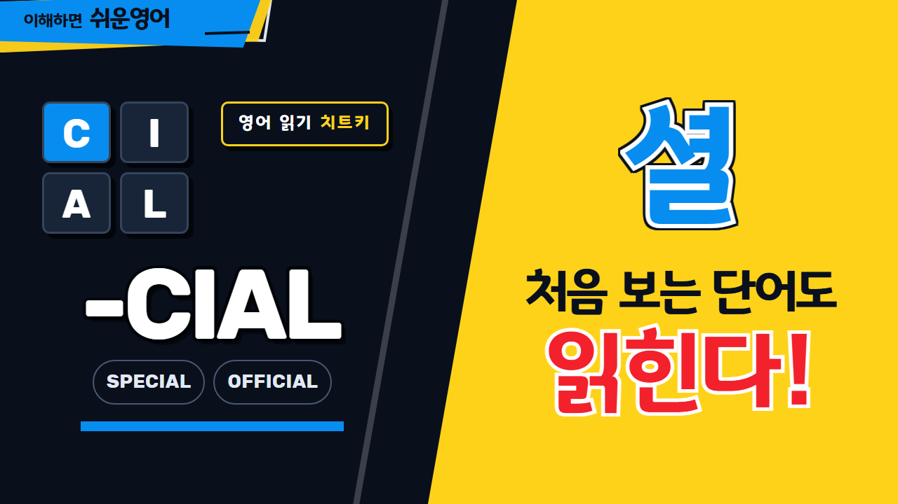
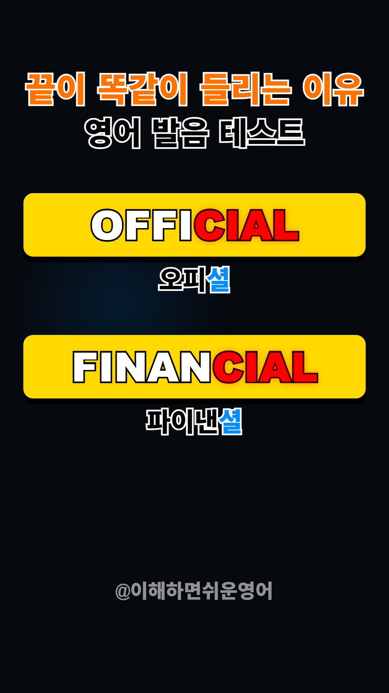
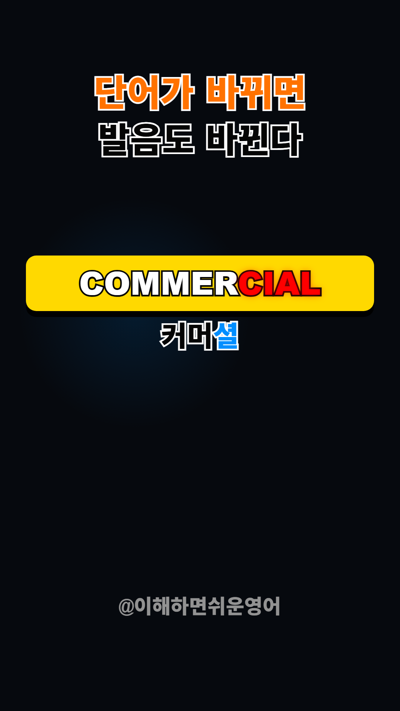

공개 순서: 롱폼 → 2일 뒤 쇼츠 A → 4일 뒤 쇼츠 B · {{EP9_LONGFORM_URL}}은 롱폼 공개 후 실제 주소로 교체
롱폼scheduled
예약 공개 일시
2026-08-23 20:00 KST
공개 후 확인
□ 고정 댓글 작성
□ 댓글 고정 여부 확인
□ 엔딩 화면 EP8 연결 확인
□ 쇼츠 A·B 관련 영상에 EP9 롱폼 연결

엔딩 화면 연결 영상
영어 발음, PICTURE는 왜 '픽투어'가 아닐까? | -TURE 규칙 (영어기초배우기 EP8)영상 ID · YoaCRYCWpws
엔딩 화면 영상 URL
https://youtu.be/YoaCRYCWpws
제목
SPECIAL은 왜 ‘스페시알’이 아닐까? | -CIAL 영어 발음 규칙
썸네일 문구
영어 읽기 치트키
-CIAL → 셜
처음 보는 단어도 읽힌다!
설명
SPECIAL은 왜 ‘스페시알’이 아니라 스페셜일까요?
OFFICIAL, SOCIAL, COMMERCIAL, FINANCIAL의 공통된 발음과 강세 규칙을 왕초보도 이해할 수 있게 설명합니다.
「이해하면 쉬운 영어」 시즌1 아홉 번째 시간입니다.
📌 오늘 배우는 내용
・-CIAL이 한 글자씩 나뉘지 않고 ‘셜’로 소리 나는 이유
・SPECIAL, OFFICIAL, SOCIAL의 발음과 강세
・COMMERCIAL, FINANCIAL, CRUCIAL 실생활 단어
・ARTIFICIAL, SUPERFICIAL로 확인하는 실전 적용
・-TION, -SION, -TURE, -CIAL을 연결하는 하나의 원리
⏱️ 영상 순서
00:00 SPECIAL의 C는 왜 ‘셔’ 소리일까?
00:28 지난 편 복습과 오늘의 규칙
00:54 SPECIAL·OFFICIAL·SOCIAL 패턴
01:15 -CIAL 발음과 강세 규칙
01:39 C가 ‘셜’로 바뀌는 이유
02:10 실생활 단어로 확인
02:37 시즌1 소리 변화 한 번에 연결하기
03:16 ARTIFICIAL·SUPERFICIAL 실전 적용
03:41 오늘의 핵심 요약
04:08 다음 편: 시즌1 총정리
📚 시즌1 전체 재생목록
https://www.youtube.com/playlist?list=PLdTWj5v6v8zE
▶ 지난 시간 EP8: PICTURE는 왜 ‘픽투어’가 아닐까?
https://youtu.be/YoaCRYCWpws
영어는 외우는 것이 아니라, 이해하는 것입니다.
구독과 좋아요는 다음 영상 제작에 큰 힘이 됩니다.
#영어발음 #영어공부 #영어강세 #기초영어 #왕초보영어 #영어단어읽는법 #파닉스규칙 #CIAL발음
태그
영어 발음, 영어 발음 규칙, 영어 강세, 영어 단어 읽는 법, 기초 영어, 왕초보 영어, 영어 공부, 성인 영어, 파닉스 규칙, cial 발음, special 발음, official 발음, social 발음, commercial 발음, financial 발음, artificial 발음, superficial 발음, 스페셜, 오피셜, 커머셜, 파이낸셜, English pronunciation, word stress, English for beginners
고정 댓글
SPECIAL·OFFICIAL·SOCIAL 중에서 처음 읽을 때 가장 헷갈렸던 단어는 무엇인가요? 👀
영상의 규칙을 적용하면 처음 보는 -CIAL 단어도 ‘셜’과 강세 위치를 함께 예상할 수 있습니다.
① SPECIAL
② OFFICIAL
③ COMMERCIAL
④ FINANCIAL
가장 헷갈렸던 번호와 발음을 댓글로 남겨주세요!
📚 시즌1 처음부터 이어서 보기
https://www.youtube.com/playlist?list=PLdTWj5v6v8zE
공개 설정
{
"order": 1,
"proposedAtKst": "2026-08-23 20:00",
"scheduledAtKst": "2026-08-23 20:00",
"scheduledPublishAtUtc": "2026-08-23T11:00:00Z",
"playlist": "이해하면 쉬운 영어 | 영어 읽는 법 기초 시즌1 (왕초보 영어 읽기)",
"category": "교육",
"alteredContent": false,
"location": "대한민국",
"recordingDate": "2026-08-23",
"postPublishTasks": [
{
"task": "고정 댓글 작성",
"status": "pending"
},
{
"task": "댓글 고정 여부 확인",
"status": "pending"
},
{
"task": "엔딩 화면 EP8 연결 확인",
"status": "pending"
},
{
"task": "쇼츠 A·B 관련 영상에 EP9 롱폼 연결",
"status": "pending"
}
]
}
쇼츠 Ascheduled
예약 공개 일시
2026-08-25 20:00 KST
공개 전 필수 확인
□ EP9 롱폼 공개 후 관련 영상 sNNufVhkjT8 연결 · 2026-08-23 20:05 KST
공개 후 확인
□ 고정 댓글 작성
□ 댓글 고정 여부 확인
□ 관련 영상 EP9 롱폼 연결 상태 최종 확인

관련 영상 연결
현재 연결 대기 · 롱폼 공개 후 2026-08-23 20:00 KST부터 연결
영상 ID: sNNufVhkjT8
https://youtu.be/sNNufVhkjT8
제목
OFFICIAL을 ‘오피시알’로 읽으면 틀립니다 #영어발음 #shorts
썸네일 문구
끝이 똑같이 들리는 이유
OFFICIAL · FINANCIAL
오피셜 · 파이낸셜
설명
SPECIAL과 SOCIAL의 끝은 모두 ‘셜’로 읽습니다.
그렇다면 OFFICIAL과 FINANCIAL은
‘오피시알’, ‘파이낸시알’로 읽을까요?
정답은 오피셜, 파이낸셜입니다.
네 단어에 공통으로 들어간 -CIAL은
한 글자씩 나누지 않고 ‘셜’로 붙여 읽어요.
📌 -CIAL이 왜 ‘셜’로 바뀌는지 자세히 보기
https://youtu.be/sNNufVhkjT8
#영어발음 #영어공부 #기초영어 #왕초보영어 #발음테스트 #EnglishPronunciation #shorts
태그
영어 발음, 영어 발음 테스트, 영어 발음 규칙, 기초 영어, 왕초보 영어, 영어 공부, 영단어 발음, official 발음, financial 발음, special 발음, social 발음, 오피셜, 파이낸셜, cial 발음, 영어 쇼츠, 영어교육, English pronunciation, pronunciation test, official pronunciation, financial pronunciation
고정 댓글
OFFICIAL과 FINANCIAL을 처음 보고 어떻게 읽으셨나요? 👀
① 오피시알 / 파이낸시알
② 오피셜 / 파이낸셜
정답을 맞혔는지 댓글로 알려주세요!
-CIAL이 왜 한 번에 ‘셜’로 소리 나는지는 관련 영상에서 확인할 수 있습니다. 👇
https://youtu.be/sNNufVhkjT8
공개 설정
{
"order": 2,
"relativeToLongform": "+2 days",
"timeKst": "20:00",
"scheduledAtKst": "2026-08-25 20:00",
"scheduledPublishAtUtc": "2026-08-25T11:00:00Z",
"playlist": "이해하면 쉬운 영어 | 영어 읽는 법 테스트 시즌1 (30초 퀴즈)",
"category": "교육",
"alteredContent": false,
"location": "대한민국",
"prePublishTasks": [
{
"task": "EP9 롱폼 공개 후 관련 영상 sNNufVhkjT8 연결",
"status": "pending",
"dueAtKst": "2026-08-23 20:05"
}
],
"postPublishTasks": [
{
"task": "고정 댓글 작성",
"status": "pending"
},
{
"task": "댓글 고정 여부 확인",
"status": "pending"
},
{
"task": "관련 영상 EP9 롱폼 연결 상태 최종 확인",
"status": "pending"
}
]
}
쇼츠 Bscheduled
예약 공개 일시
2026-08-27 20:00 KST
공개 전 필수 확인
□ EP9 롱폼 공개 후 관련 영상 sNNufVhkjT8 연결 · 2026-08-23 20:05 KST
공개 후 확인
□ 고정 댓글 작성
□ 댓글 고정 여부 확인
□ 관련 영상 EP9 롱폼 연결 상태 최종 확인

관련 영상 연결
현재 연결 대기 · 롱폼 공개 후 2026-08-23 20:00 KST부터 연결
영상 ID: sNNufVhkjT8
https://youtu.be/sNNufVhkjT8
제목
COMMERCIAL, ‘커머시알’이 아닙니다 #영어발음 #shorts
썸네일 문구
단어가 바뀌면 발음도 바뀐다
COMMERCIAL
커머셜
설명
COMMERCE는 커머스입니다.
그런데 ‘광고의’라는 뜻의 COMMERCIAL은
커머시알이 아니라 커머셜로 읽습니다.
FINANCIAL도 파이낸시알이 아니라 파이낸셜이에요.
두 단어의 끝에 있는 -CIAL은 ‘셜’로 붙여 읽고,
힘은 ‘셜’ 바로 앞부분에 들어갑니다.
📌 발음과 강세가 함께 바뀌는 원리 자세히 보기
https://youtu.be/sNNufVhkjT8
#영어발음 #영어공부 #기초영어 #왕초보영어 #발음테스트 #EnglishPronunciation #shorts
태그
영어 발음, 영어 발음 테스트, 영어 발음 규칙, 기초 영어, 왕초보 영어, 영어 공부, 영단어 발음, commercial 발음, commerce 발음, financial 발음, 커머셜, 파이낸셜, cial 발음, 영어 강세, 영어 쇼츠, 영어교육, English pronunciation, pronunciation test, commercial pronunciation, financial pronunciation
고정 댓글
COMMERCE가 커머스라면 COMMERCIAL은 어떻게 읽으셨나요? 👀
① 커머시알
② 커머셜
FINANCIAL까지 맞혔는지도 댓글로 알려주세요!
-CIAL의 발음과 강세 원리는 관련 영상에서 자세히 확인할 수 있습니다. 👇
https://youtu.be/sNNufVhkjT8
공개 설정
{
"order": 3,
"relativeToLongform": "+4 days",
"timeKst": "20:00",
"scheduledAtKst": "2026-08-27 20:00",
"scheduledPublishAtUtc": "2026-08-27T11:00:00Z",
"playlist": "이해하면 쉬운 영어 | 영어 읽는 법 테스트 시즌1 (30초 퀴즈)",
"category": "교육",
"alteredContent": false,
"location": "대한민국",
"prePublishTasks": [
{
"task": "EP9 롱폼 공개 후 관련 영상 sNNufVhkjT8 연결",
"status": "pending",
"dueAtKst": "2026-08-23 20:05"
}
],
"postPublishTasks": [
{
"task": "고정 댓글 작성",
"status": "pending"
},
{
"task": "댓글 고정 여부 확인",
"status": "pending"
},
{
"task": "관련 영상 EP9 롱폼 연결 상태 최종 확인",
"status": "pending"
}
]
}